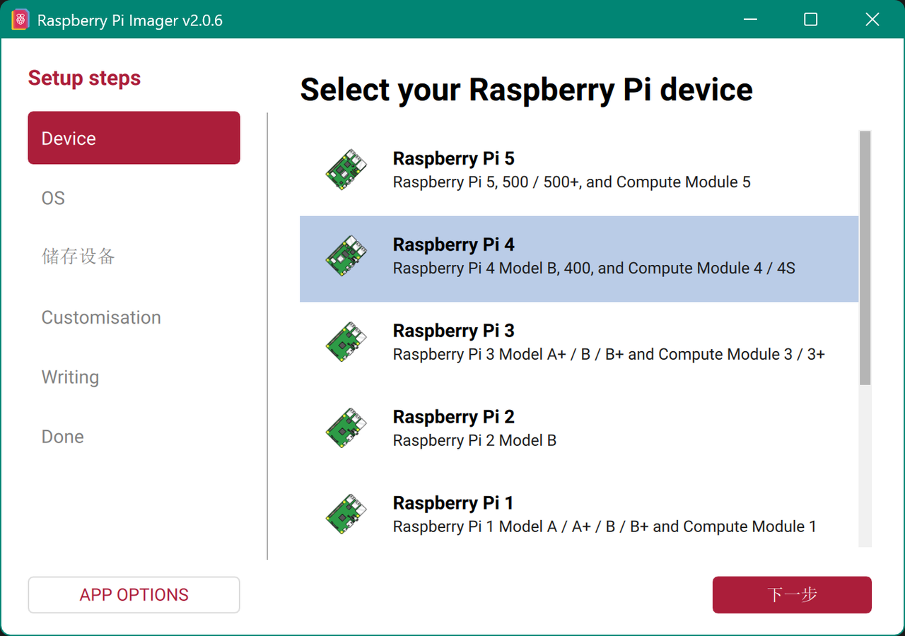
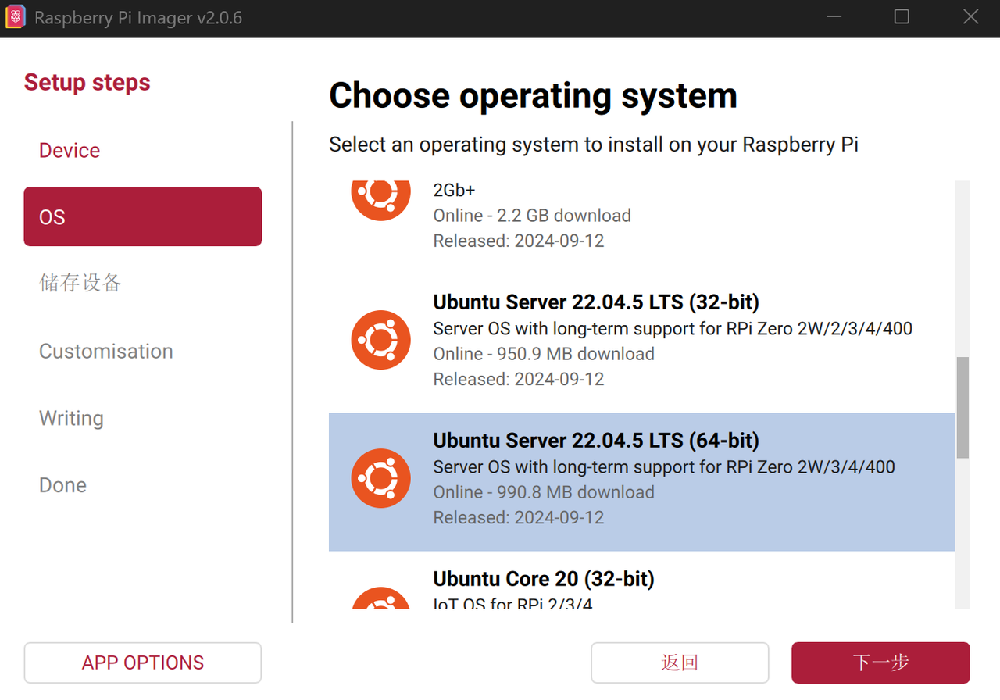
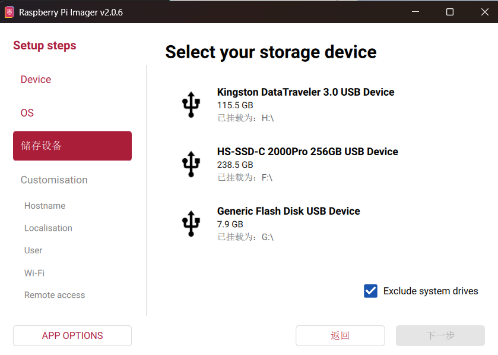
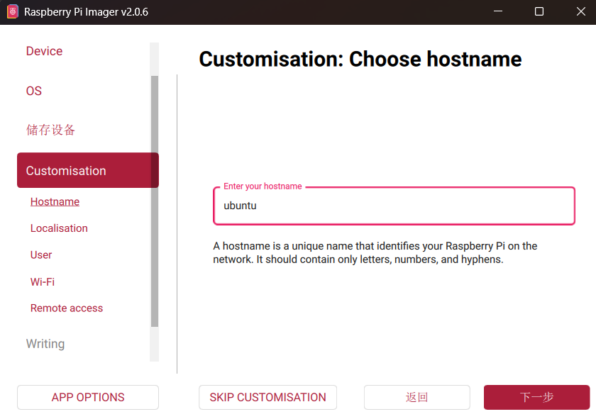
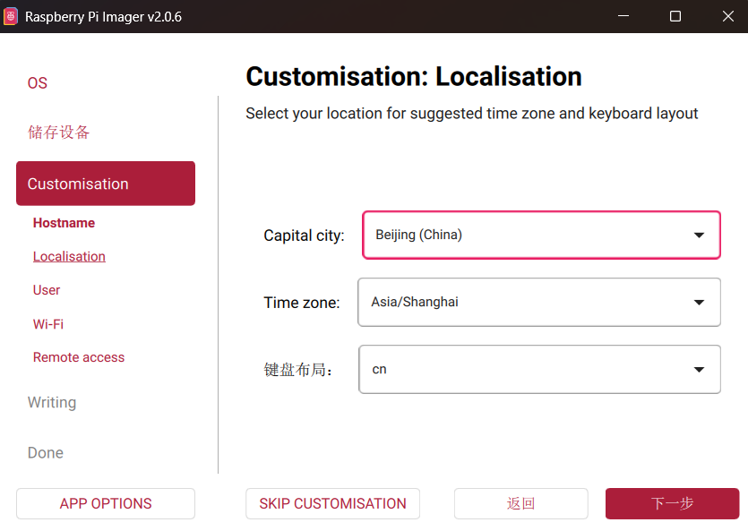
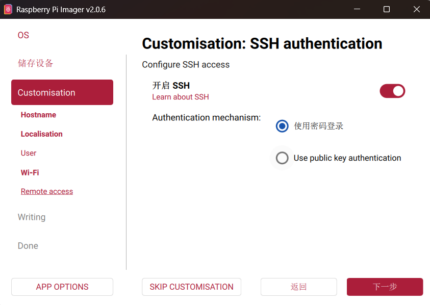
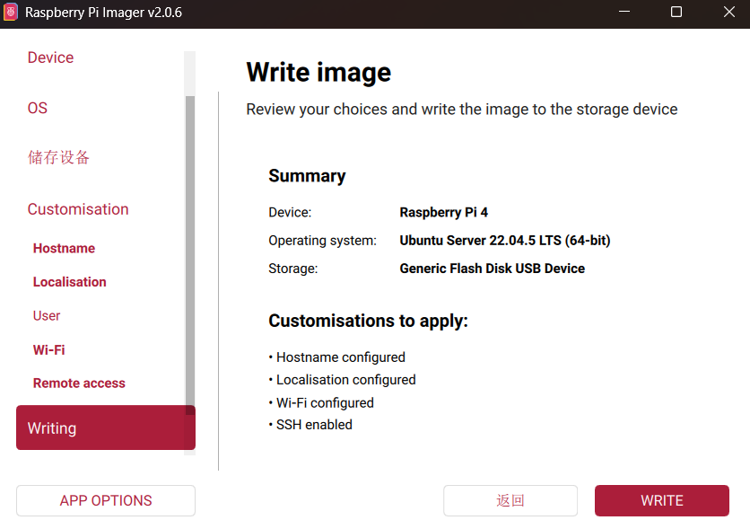

拿树莓派做一个能代理网络家庭网关！
你能学到
- 从零搭建树莓派网关
- 树莓派系统烧录（UHS-1 及以上性能TF卡）
- 树莓派（ubuntu 2204 server）的网络设置
工具准备
- 树莓派
- 千兆+网线
- 无线AP
写入系统
安装raspberry imager：https://www.raspberrypi.com/software/
使用默认设置安装即可，路径根据自己的需要更改，完成后按照以下步骤进行：







系统配置
设置root用户
1 | sudo passwd root |
禁用Cloud-init
第一次启动会卡在Reached target Cloud-init是正常的，这里需要等待10分钟左右，完成后就会提示登陆。
Cloud-init用于在首次启动时自动配置 Linux 系统的标准工具。在云服务器上，它用来设置主机名、注入 SSH 密钥、配置网络等。在树莓派上，官方镜像（特别是 Ubuntu Server 和部分 Raspberry Pi OS）也集成了它，用于执行首次启动的脚本（如扩展文件系统、设置默认用户密码、配置 Wi-Fi 等）。
如果等不及了可以使用Ctrl + Alt + F2 或 F3 尝试切换到另一个虚拟终端进行登录。
启动完成后可以直接将Cloud-init禁用，后续不会有什么影响：
1 | sudo touch /etc/cloud/cloud-init.disabled |
登陆完成后，需要使用ifconfig查看IP用于远程SSH登陆：
1 | sudo apt install net-tools |
禁用自动更新
强烈建议系统自带的自动更新功能（unattended-upgr），这玩意会导致dpkg死锁，有时候卡很久重启也不一定行：
检查自动更新服务状态：
1 | sudo systemctl status unattended-upgrades |
停止unattended-upgrades服务：
1 | sudo systemctl stop unattended-upgrades |
禁用开机自启：
1 | sudo systemctl disable unattended-upgrades |
禁用之后需要偶尔手动更新以保持系统正常运行：
1 | sudo apt update && sudo apt upgrade -y |
禁用systemd-networkd-wait-online
开机会一直等待网络连接：a start job is running for wait for network，这一功能只对于开机就必须联网的服务有用，一般情况反而会拖慢开机速度，解决办法：
1 | sudo systemctl disable systemd-networkd-wait-online.service |
禁用needrestart
进行apt更新后出现这个：
%% Failed to check for processor microcode upgrades.
No services need to be restarted.
No containers need to be restarted.
No user sessions are running outdated binaries.
No VM guests are running outdated hypervisor (qemu) binaries on this host. %%
那么可以通过禁用needrestart解决，按需选择是否禁用。
needrestart 是一个在 Linux 系统（特别是基于 Debian/Ubuntu 的发行版）中广泛使用的实用工具，主要用于检测并提示哪些系统服务（守护进程）在库文件更新后需要重启，以确保它们加载最新版本的共享库。
1 | sudo apt remove needrestart -y |
网络配置
基础网络配置（fishrosROS）
- 配置系统源与Python源：5 && 13
1 | wget http://fishros.com/install -O fishros && . fishros |
- 安装iw
iw是 Linux 系统中用于配置和管理 无线网卡（Wi-Fi） 的命令行工具。
它是旧版工具iwconfig（属于wireless-tools包）的现代替代品，专门设计用于支持新的 nl80211 内核接口。如果你在使用较新的 Linux 发行版或较新的无线网卡，iw是首选甚至唯一的配置工具。
1 | sudo apt install iw -y |
- 安装NetworkManager
NetworkManager 是 Linux 系统中广泛使用的网络连接管理守护进程和服务。它的主要目标是简化网络配置，使连接网络（包括 Wi-Fi、以太网、移动宽带、VPN 等）变得动态、自动且对用户友好。
1 | sudo apt install network-manager -y |
1 | sudo systemctl enable NetworkManager |
- 配置NetworkManager接管网络接口
1 | sudo vim /etc/NetworkManager/NetworkManager.conf |
将managed置为true
1 | sudo systemctl restart NetworkManager |
配置netplan
1 | sudo cp /etc/netplan/50-cloud-init.yaml /etc/netplan/50-cloud-init.yaml.back |
1 | sudo vim /etc/netplan/50-cloud-init.yaml |
1 | network: |
1 | sudo netplan generate |
1 | sudo netplan apply |
设置网关与透明代理
说明：无论clashon或者clashoff只要mihomo.service正常运行，树莓派WiFi都是有代理的，clashon或者clashoff只是影响本机代理。
说明：这一部分是对通过网线连接无线AP方式进行的配置，USB网卡AP请见最后一章的说明
1 | sudo apt update |
设置clash
1 | mkdir network && cd network |
1 | git clone --branch master --depth 1 https://gh-proxy.org/https://github.com/nelvko/clash-for-linux-install.git \ |
1 | source ~/.bashrc |
设置路由
1 | ip route |
如果有其他路由则删去，只保留wlan0，若有其他路由，以eth0为例：
1 | sudo ip route del default via 192.168.137.1 dev eth0 |
开启ipv4转发
1 | sudo vim /etc/sysctl.conf |
在文末添加：
1 |
|
1 | sudo sysctl -p |
验证，返回1则成功开启
1 | cat /proc/sys/net/ipv4/ip_forward |
关闭systemd-resolved
1 | sudo systemctl disable systemd-resolved |
确认已停止，应显示 inactive (dead)， disabled，exited
1 | systemctl status systemd-resolved |
修改hosts
1 | sudo cp /etc/hosts /etc/hosts.bak |
终端输入hostname查询本机hostname
1 | sudo vim /etc/hosts |
写入：（注意看你的hostname是不是ubuntu）
1 | 127.0.0.1 localhost |
创建静态 resolv.conf
1 | sudo cp -d /etc/resolv.conf /etc/resolv.conf.bak |
1 | sudo rm /etc/resolv.conf && sudo vim /etc/resolv.conf |
写入：
1 | nameserver 8.8.8.8 |
-i是取消保护，+i后即便是root也无法修改
1 | sudo chattr +i /etc/resolv.conf |
安装 DHCP 服务器（dnsmasq）
1 | sudo apt update && sudo apt install dnsmasq -y |
- 备份原配置
1 | sudo mv /etc/dnsmasq.conf /etc/dnsmasq.conf.bak |
- 新建最小配置
1 | sudo vim /etc/dnsmasq.conf |
写入：
1 | interface=eth0 |
- 启动服务并设置开机自启
1 | sudo systemctl start dnsmasq |
1 | sudo systemctl enable dnsmasq |
配置 NAT
出口接口是 wlan0，经典旁路由NAT规则：
1 | sudo iptables -F |
配置tcp
1 | sudo iptables -t mangle -A FORWARD \ |
配置透明代理
注意：配置完成后不得再打开tun模式
- 加载内核模块，用于启用 透明代理：
1 | sudo modprobe xt_TPROXY |
- 配置clash
将clash进程写进systemctl
1 | sudo vim /etc/systemd/system/mihomo.service |
检查自己的路径是否正确
1 | [Unit] |
- 启动服务
1 | sudo systemctl daemon-reload |
- 设置端口代理：
1 | sudo vim /your/path/to/clashctl/resources/mixin.yaml |
在mixin.yaml将这些替代原有的参数
1 | mixed-port: 7890 |
在mixin.yaml替换DNS
1 | dns: |
由于mihomo.service设置的是root权限，所以需要进入root模式才能使用clash的各项功能。
- 配置root的
.bashrc
1 | su root && vim ~/.bashrc |
文末写入：
1 | # clashctl START |
1 | source ~/.bashrc |
- 重新加载代理并重启
mihomo.service
1 | clashctl sub update |
此时，7891、7892、7893、1053应当都已被已监听。
1 | sudo ss -lntp | grep mihomo |
出现：
1 | LISTEN 0 4096 127.0.0.1:7893 0.0.0.0:* users:(("mihomo",pid=11364,fd=13)) |
- 创建 TCP TPROXY 规则
1 | su hui |
1 | sudo iptables -t nat -N CLASH |
- 创建 UDP TPROXY 规则
1 | sudo iptables -t mangle -N CLASH |
- 劫持DNS
先排除本机
1 | sudo iptables -t nat -A OUTPUT -p udp --dport 53 -j RETURN |
再劫持局域网 DNS
1 | sudo iptables -t nat -A PREROUTING -i eth0 -p udp --dport 53 -j REDIRECT --to-ports 1053 |
保存iptables 规则
1 | sudo apt update && sudo apt install iptables-persistent -y |
弹窗都选择yes即可
组装
将网线插入树莓派网口，将另一端插入无线AP即可。
如果你使用的带有无线AP功能的USB网卡，那么你需要将网络配置中NAT规则中的eth0改为你的无线网卡ID，例如wlan1或者wlan001122334455。

说些什么吧！